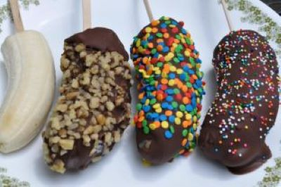
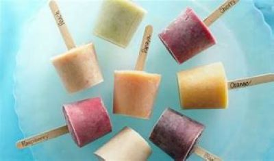

Para elaborar un delicioso topogigio o charamusca de chocolate solo debes licuar 2 litros de leche junto con 1 taza de cocoa en polvo, 1 taza de azúcar y 1 cucharadita de esencia de vainilla, todo debe ser de tu preferencia de cuantos quieres hacer cambia los las porciones solo añardir un poco mas de cada cada ingrediente. Cuando todos los ingredientes estén mezclados, colocar un cucharón de la mezcla en cada bolsa pequeña, introducir al freezer y dejar por unas 2 horas o hasta que esté bien congelado.
Licuar 2 litros de agua con 1 taza de pulpa de tamarindo y 1 taza de azúcar. Cuando todos los ingredientes estén mezclados, colocar un cucharón de la mezcla en cada bolsa pequeña, introducir al freezer y dejar por unas 2 horas o hasta que esté bien congelado.

Licuar un litro de leche añadir dos paquetitos de galleta Oreo ,1 taza de azucar o miel , 1 cucharadita de vainilla mezclar todos los ingredientes,colocar un cucharon dela mezcla en cada bolsa pequeña, introducir al freezer y dejar por 2 horas hasta que esten bien congelados.
ingredientes: 5 bananos o los de tu preferencia,1 paquete de cubertura de chocolate ,palitos de madera,cacahuate,coco rayado ,confeti de reposteria ho lo que tu quieres de preferenciencia añadirle.
Cortar los bananos por mitad e insertar la palilla donde se hizo el corte, luego introducirlos en el freezer maximo 6 horas y que se congelen esto hara que cuando se cubra de chocolate se seque rapidamente.
A parte derretir el chocolate a baño maría o en el microondas en lapsos de 15 en 15 segundos hasta que se derrita.
Colocar el chocolate en un recipiente hondo y sumergir los bananos completamente; una vez con la cobertura agregar los toppings de su preferencia y colocarlos en papel encerado para luego refrigerarlos y quedan listos para difrutar.
ingredientes:1 litro de leche,paletas de madera, 1 paquete de vaso de plastico numero 5 o el de tu preferencia,fruta ya sea melon, o conflakes o lo que tu prefieras agregarle, 1 taza de azucar, una cucharadita de vainilla si lo prefieres.
Licuar el litro de leche con la fruta y 1 cucharadita de vainilla.
una vez licuado todo agregarle taza de azucar y vertir en los vasos, poner las paletas dentro delvaso luego llevarlos al freezer maximo 6 horas para que se congelen y despues ya estaran listos para difrutar en tu paladar.
